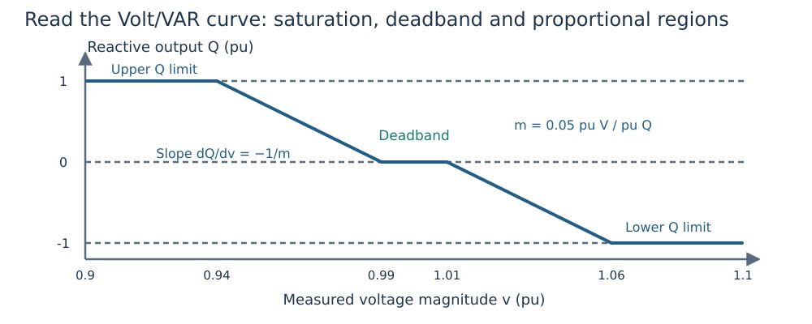

Reading and designing a Volt/VAR curve
A Volt/VAR controller supplies a relation between measured voltage and generator reactive output. Here VAR means reactive power; the code uses per-unit reactive power on the case system base. Start with the worked OPF if you want to see how the curve enters a network solve.

Figure 1. Illustrative exact curve: reference 1.0 pu, edges 0.99/1.01 pu, zero deadband output, slope 0.05 pu voltage/pu reactive power, Q limits −1/+1 pu. Positive output injects reactive power. The chart is a control law, not a trajectory.
Define every parameter
| Symbol | Meaning | Figure value |
|---|---|---|
| $v^m$ | Measured voltage magnitude, pu | Horizontal coordinate |
| $v^{ref}$ | Reference voltage, pu | 1.0 |
| $d^-,d^+$ | Lower/upper deadband widths, pu voltage | 0.01 each |
| $v^-=v^{ref}-d^-$, $v^+=v^{ref}+d^+$ | Deadband edges, pu voltage | 0.99, 1.01 |
| $q^0$ | Reactive output inside the deadband, pu | 0 |
| $m$ | Positive voltage-per-reactive-power slope | 0.05 |
| $q^{raw}$ | Unsaturated reactive request, pu | Computed below |
| $Q^-,Q^+$ | Effective reactive lower/upper limits, pu | −1, +1 |
| $Q$ | Delivered equilibrium reactive output, pu | Vertical coordinate |
Define the positive part $[z]_+=\max(z,0)$ and clipping $\operatorname{clip}(z,L,U)=\min(U,\max(L,z))$. Here $z$ is a real input, and $L,U$ its lower/upper bounds in the same units. The exact law is
\[q^{raw}(v^m)=q^0+\frac{[v^- -v^m]_+}{m} -\frac{[v^m-v^+]_+}{m},\qquad Q=\operatorname{clip}(q^{raw},Q^-,Q^+).\]
Inside the deadband both hinge terms vanish. Below its lower edge the controller injects more reactive power; above its upper edge it absorbs more. Clipping prevents a request outside capability from becoming a delivered output. In a proportional segment the derivative is $dQ/dv^m=-1/m$. Therefore smaller positive slope means a stronger reactive response; the stored slope is not that derivative or its magnitude.
Calculate one point by hand
With the figure's parameters, a measured voltage of $v^m=0.97$ pu gives $q^{raw}=(0.99-0.97)/0.05=0.4$ pu, and clipping leaves $Q=0.4$ pu. At $v^m=0.90$ pu the raw request is 1.8 pu, so the delivered output is 1 pu. On a 100 MVA base those outputs are 40 and 100 MVAr, respectively.
using DroopOPF
schedule = VoltageSchedule(1.0; v_db_low=0.99, v_db_high=1.01)
cap = ReactiveCapability(p_min=0.0, p_max=2.0, q_min=-1.0, q_max=1.0)
curve = VoltVarDroop(schedule, 0.05, cap; q_ref=0.0)
@assert isapprox(droop_response(curve, 0.97; p=0.5), 0.4; atol=1e-12)
@assert droop_response(curve, 0.90; p=0.5) == 1.0
[(voltage=v, reactive_output=droop_response(curve, v; p=0.5))
for v in (0.90, 0.97, 1.00, 1.03, 1.10)]5-element Vector{@NamedTuple{voltage::Float64, reactive_output::Float64}}:
(voltage = 0.9, reactive_output = 1.0)
(voltage = 0.97, reactive_output = 0.4)
(voltage = 1.0, reactive_output = 0.0)
(voltage = 1.03, reactive_output = -0.4)
(voltage = 1.1, reactive_output = -1.0)A deadband does not hold voltage at its center. It holds the requested reactive output constant while the network equations determine voltage.
Capability can depend on active output
If a generator has an explicitly supplied apparent rating $S^{rated}$, active output $P$ leaves at most $\sqrt{(S^{rated})^2-P^2}$ reactive magnitude, provided $|P|\le S^{rated}$. That circle intersects the supplied Q box and any attached control capability. Here $P$ is active output, $S^{rated}$ is apparent rating, and $|\cdot|$ is absolute value. All powers use the same system base.
Increasing active output can therefore clip the same curve at a different Q limit. A clipped voltage-target AVR releases regulation; a clipped droop retains its parameters and delivers the available limit. See mixed controls. A circle is not a full voltage-dependent converter-current model.
Design a parameter, then freeze the result
A fixed-curve OPF solves for the operating point on supplied curves. Droop design makes selected curve parameters additional optimization variables inside explicit bounds. A reference shift translates the deadband edges if its widths are fixed; slope changes alter proportional gain. Widths may be asymmetric. The reactive deadband output and capability remain supplied in the standard design family.
Use the bounded design API for a small parameter study, or shared contingency design for one controller across training outages. Held-out conditions must use the frozen design according to the declared dispatch/equipment policy. Retuning for each evaluation outage tests a different policy.
Smooth encoding versus the exact law
Smooth nonlinear programming (NLP) replaces the positive-part corners with smooth approximations. Exact complementarity introduces inequalities and orthogonality conditions to describe the same physical graph. Both need independent validation. Numerical smoothing width, physical deadband width and acceptance tolerance are three different quantities. See solver formulations.